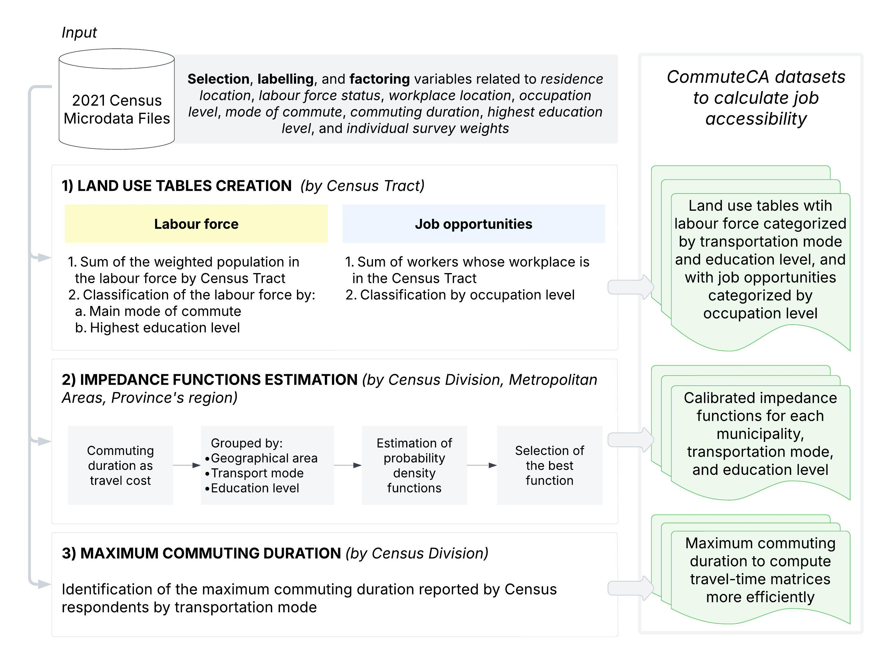
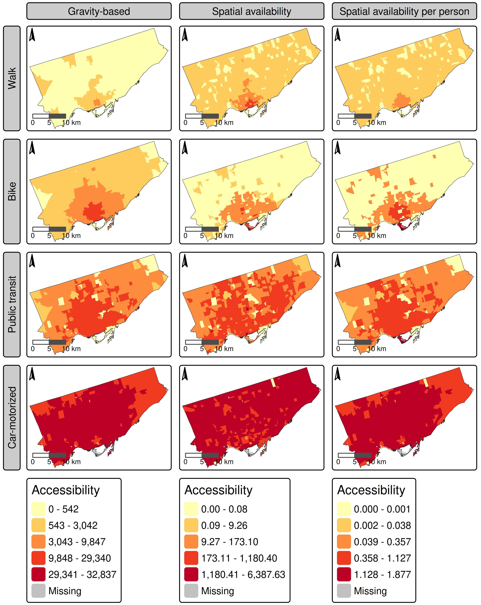
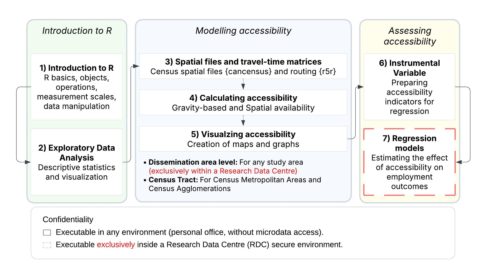

The CommuteCA R package was created to provide analysis-ready datasets from the 2021 Census of Population, along with standardized methods and customized functions for performing urban accessibility in Canada. We focused our efforts on processing variables from the Commuting Reference Guide, which provides valuable variables and information on commuting to work for the Canadian population aged 15 and older living in private households.
The name of the package, CommuteCA, references the commuting section of the 2021 Canadian Census of Population. This package was created in conjunction with the office of the Research Data Center at McMaster University, the Sherman Centre for Digital Scholarship and the Mobilizing Justice.
The Mobilizing Justice project is a multidisciplinary and multi-sector collaboration with the objective of understand and address transportation poverty in Canada and to improve the well-being of Canadians at risk of transport poverty. The Social Sciences and Humanities Research Council (SSRHC) has provided funding for the project, which was created by an unprecedented alliance of academics from various Canadian provinces and institutions, transportation firms, and nonprofit organizations.
Structure
CommuteCA consists of a series of R datasets and R Markdown files created to calculate job accessibility for any study area in Canada using the 2021 Census of Population as the primary data source. The source data (the demographic census) is restricted and requires controlled access, meaning it must be processed within a Research Data Center (RDC) office. The package includes datasets and R Markdown files that enable accessibility analysis for two spatial units:
- Census Tracts, available only for Census Metropolitan Areas and Census Agglomerations.
- Dissemination Areas, a Statistics Canada spatial unit available nationwide.
For Census Tracts, the package provides datasets and R Markdown files that allow researchers and transport practitioners to generate job accessibility measures and maps without needing to visit an RDC office.
For Dissemination Areas, we developed R Markdown files that split the process of calculating and analyzing accessibility metrics into distinct steps. This structure simplifies data processing, given the restricted nature of the source data.
Data sets

The package contains a series of datasets for accessibility analysis and other transportation studies. The datasets include calibrated impedance functions for job destinations across walking, cycling, public transit, and motorized vehicle modes, categorized or not by education level. These functions are provided at three geographic levels: Census Divisions (Municipality), Census Metropolitan Areas (CMA) and Census Agglomerations (CA), and Census Metropolitan Influenced Zones within Province and Territories.
The code bellow display the calibrated impedance functions for the City of Toronto (Census Division Code (PCD) = 3520):
library("CommuteCA")
library("dplyr")
#>
#> Attaching package: 'dplyr'
#> The following objects are masked from 'package:stats':
#>
#> filter, lag
#> The following objects are masked from 'package:base':
#>
#> intersect, setdiff, setequal, union
data("pcd_impedance_functions") # Load provincial impedance functions
pcd_impedance_functions %>%
filter(PCD == "3520") %>% # Filter for the City of Toronto
dplyr::select(PCDNAME, PRNAME, PwMode_label, Distribution, est_1, est_2) # Display key columns
#> # A tibble: 4 × 6
#> PCDNAME PRNAME PwMode_label Distribution est_1 est_2
#> <fct> <fct> <fct> <fct> <dbl> <dbl>
#> 1 Toronto Ontario Public transit Gamma 3.60 0.0788
#> 2 Toronto Ontario Car-motorized Gamma 2.33 0.0861
#> 3 Toronto Ontario Walk Gamma 1.33 0.0849
#> 4 Toronto Ontario Bike Log-normal 2.94 0.648Another way to search for the functions is by using the search_impedance_function() function from CommuteCA:
search_impedance_function(code = 3520, type = "PCD")
#> code type PwMode_label Education Distribution est_1 est_2
#> 1 3520 PCD Bike All levels of education Log-normal 2.93888 0.64825
#> 2 3520 PCD Walk All levels of education Gamma 1.33045 0.08492
#> 3 3520 PCD Car-motorized All levels of education Gamma 2.32897 0.08613
#> 4 3520 PCD Public transit All levels of education Gamma 3.60068 0.07877
#> source
#> 1 PCD
#> 2 PCD
#> 3 PCD
#> 4 PCDTo split the calibrated functions by education level:
search_impedance_function(code = 3520, use_education = TRUE, type = "PCD")
#> code type PwMode_label Education Distribution
#> 1 3520 PCD Bike College or apprenticeship certificate Log-normal
#> 2 3520 PCD Bike High school or no certificate Log-normal
#> 3 3520 PCD Bike University certificate or higher Gamma
#> 4 3520 PCD Walk College or apprenticeship certificate Gamma
#> 5 3520 PCD Walk High school or no certificate Gamma
#> 6 3520 PCD Walk University certificate or higher Gamma
#> 7 3520 PCD Car-motorized College or apprenticeship certificate Gamma
#> 8 3520 PCD Car-motorized High school or no certificate Gamma
#> 9 3520 PCD Car-motorized University certificate or higher Gamma
#> 10 3520 PCD Public transit College or apprenticeship certificate Gamma
#> 11 3520 PCD Public transit High school or no certificate Gamma
#> 12 3520 PCD Public transit University certificate or higher Gamma
#> est_1 est_2 source
#> 1 2.94994 0.71079 PCD
#> 2 2.80623 0.79204 PCD
#> 3 3.15405 0.13606 PCD
#> 4 1.11745 0.07031 PCD
#> 5 1.30547 0.08843 PCD
#> 6 1.43916 0.08964 PCD
#> 7 2.45437 0.09013 PCD
#> 8 2.10548 0.07903 PCD
#> 9 2.45621 0.09007 PCD
#> 10 3.53751 0.07519 PCD
#> 11 3.31859 0.07375 PCD
#> 12 3.88187 0.08529 PCDNext, you can use the generate_impedance() function to calculate the impedance value given a travel cost (duration):
specific_function <- search_impedance_function(code = 3520,
use_education = TRUE,
type = "PCD")
max_dur <- 90
expanded_df <- specific_function %>%
slice(rep(seq_len(nrow(.)), each = max_dur)) %>%
mutate(t = rep(seq_len(max_dur), times = nrow(specific_function)))
tld_theoretical <- generate_impedance(df = expanded_df,
travel_cost_col = "t",
distribution_col = "Distribution",
est1_col = "est_1",
est2_col = "est_2",
output_col = "f")
head(tld_theoretical)
#> # A tibble: 6 × 7
#> code type PwMode_label Education source t f
#> <dbl> <chr> <chr> <chr> <chr> <int> <dbl>
#> 1 3520 PCD Walk College or apprenticeship certif… PCD 1 0.0508
#> 2 3520 PCD Walk College or apprenticeship certif… PCD 2 0.0514
#> 3 3520 PCD Walk College or apprenticeship certif… PCD 3 0.0502
#> 4 3520 PCD Walk College or apprenticeship certif… PCD 4 0.0484
#> 5 3520 PCD Walk College or apprenticeship certif… PCD 5 0.0463
#> 6 3520 PCD Walk College or apprenticeship certif… PCD 6 0.0441The package also includes land use tables with labour force population and job counts for census tracts. The code below visualizes Toronto’s labour force by transportation mode for some census tracts:
data("labour_force_CT_mode") # Land Use data with information of labour force considering transportation modes
labour_force_3520 <- labour_force_CT_mode %>%
filter(PCD == 3520) %>% # Filtering data for the city of Toronto
dplyr::select(CTUID, PwMode_label, labour_force_rounded)
head(labour_force_3520)
#> # A tibble: 6 × 3
#> CTUID PwMode_label labour_force_rounded
#> <fct> <fct> <dbl>
#> 1 5350001.00 Public transit 30
#> 2 5350001.00 Car-motorized 110
#> 3 5350001.00 Other or non-commuter 230
#> 4 5350001.00 Walk 35
#> 5 5350002.00 Other or non-commuter 165
#> 6 5350002.00 Car-motorized 35Now, the job opportunities:
data("jobs_CT_general") # Land Use data with information of number of jobs
jobs_3520 <- jobs_CT_general %>%
filter(PCD == 3520) %>% # Filtering data for the city of Toronto
dplyr::select(CTUID, jobs_rounded)
head(jobs_3520)
#> # A tibble: 6 × 2
#> CTUID jobs_rounded
#> <fct> <dbl>
#> 1 5350001.00 5805
#> 2 5350002.00 295
#> 3 5350003.00 195
#> 4 5350004.00 1395
#> 5 5350005.00 2735
#> 6 5350007.01 1135These datasets enable census tract-level accessibility analysis. For instance, we can use these two datasets to calculate the gravity-based accessibility by Hansen (1959) and (multimodal) spatial availability by Soukhov et al. (2024):

Explanation of the R markdown Templates

The {CommuteCA} package includes R Markdown templates that guide users through the entire accessibility analysis workflow. As illustrated in Figure , these templates enable analysts to:
- Mode job accessibility at the Census Tract (CT) level for multiple CMAs and CAs without requiring special access to confidential census microdata files.
- Model job accessibility at the Dissemination Area (DA) level for any study area in Canada, including areas outside metropolitan regions. Exclusively for researchers with access to census microdata files.
The R Markdown files are available in the /data-raw folder if you clone the repository from GitHub. If you have installed the package, you can access the R Markdown templates in RStudio by navigating to File > New File > R Markdown... > From Template and selecting one of the CommuteCA R Markdown templates.
The package provides seven (for now) R Markdown templates, organized into three progressive groups:
-
Group 1: Introduction to R (Templates 1 to 2):
- Template 1: To introduces the R language, literate programming concepts, data objects, basic operations, measurement scales, and fundamental data manipulation techniques.
- Template 2: To perform exploratory data analysis, including descriptive statistics and appropriate visualizations for different variable types.
-
Group 2: Accessibility Modelling (Templates 3 to 5)
- Template 3: To obtain spatial files via the {cancensus} package, and generating travel-time matrices using the {r5r} routing engine.
- Template 4: To calculate job accessibility using both the traditional Hansen accessibility measure (gravity model) and the spatial availability model proposed by Soukhov et al. (2023).
- Template 5: To create maps to visualize job accessibility indicators.
-
Group 3: Assessing Accessibility (Templates 6 to 7)
- Template 6: To construct spatial filters for accessibility indicators.
- Template 7: To estimate regression models that link accessibility to employment outcomes.
Installation
You can install the development version of CommuteCA from:
install.packages("pak")
pak::pak("dias-bruno/CommuteCA")